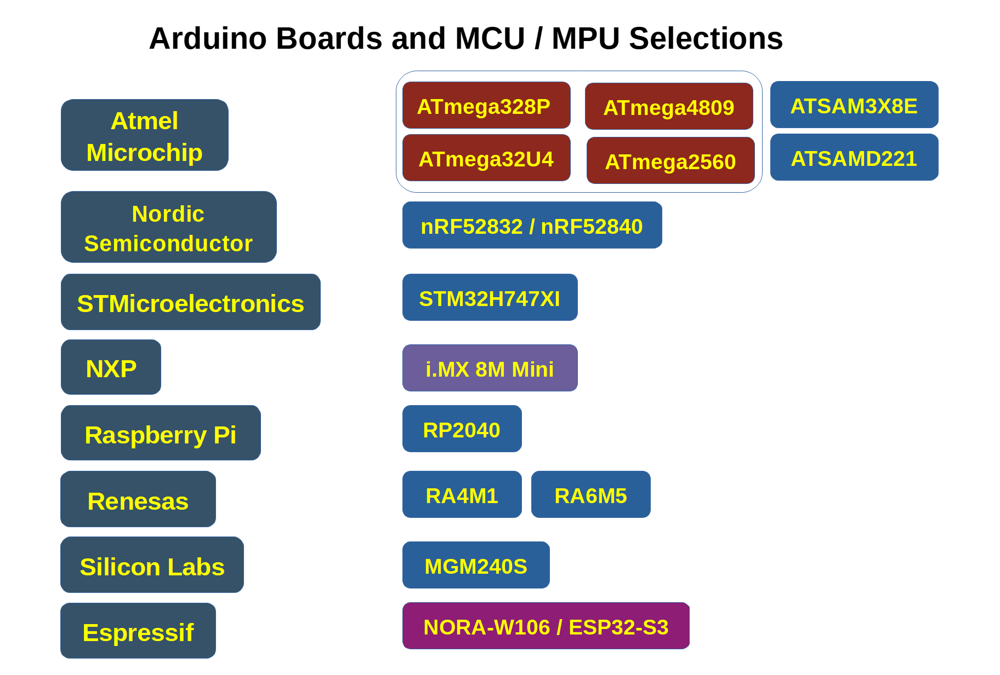

CPU Chips on Arduino Boards#
Keywords: Arduino Boards, Microcontrollers, MCU, MCU Selection
▷ บอร์ด Arduino และตัวเลือกชิปไมโครคอนโทรลเลอร์#
บอร์ด Arduino ในยุคแรก เป็นบอร์ดไมโครคอนโทรลเลอร์ที่ใช้ชิปตัวประมวลผลของบริษัท Atmel และภายในมีซีพียูแบบ RISC ตระกูล AVR ขนาด 8 บิต ความเร็วในการทำงานไม่สูงมาก เช่น 16MHz มีหน่วยความจำค่อนข้างจำกัด เช่น 2KB SRAM, 32KB Flash สำหรับ ATmega328P และทำงานด้วยแรงดันไฟเลี้ยง +5Vdc
บอร์ดรุ่นแรก ๆ ที่ได้รับความนิยม ได้แก่ Arduino Uno R3 และ Arduino MEGA 2560 ซึ่งมีขนาดของบอร์ดแตกต่างกัน และมีจำนวนของ I/O ที่แตกต่างกัน แต่ก็ไม่เหมาะกับการนำเสียบขาลงบนเบรดบอร์ด ดังนั้นรุ่นต่อมาจึงมีการกำหนดขนาดของบอร์ด (Board Form Factor) ให้มีขนาดเล็กลง เช่น บอร์ดต่าง ๆ ในรุ่น Arduino MKR Series ซึ่งสามารถนำไปเสียบขาและต่อใช้งานวงจรบนเบรดบอร์ดได้สะดวก
แม้ว่าความสามารถในการประมวลผลรุ่นแรก ๆ จะไม่สูงมากนัก แต่ก็สามารถนำไปประยุกต์ใช้งานได้หลากหลาย ยกตัวอย่างเช่น อุปกรณ์ควบคุมการบินของโดรนหลายใบพัด (Flight Controllers for Multi-Rotor Drones) และ อุปกรณ์ควบคุมการทำงานของเครื่องพิมพ์สามมิติ (3D Printer Controllers) เป็นต้น
ความก้าวหน้าของเทคโนโลยีทางด้านเซมิคอนดักเตอร์ รวมถึงการพัฒนาสถาปัตยกรรมของตัวประมวลผลและไมโครคอนโทรลเลอร์ ทำให้มีตัวเลือกมากขึ้น เช่น การใช้ซีพียูที่มีขนาด 32 บิต แทนที่ 8 บิต ความเร็วในการประมวลผลของซีพียูด้วยความถี่ของสัญญาณนาฬิกาที่สูงขึ้น ความจุของหน่วยความภายในชิป ทั้ง SRAM และ Flash ที่มีมากขึ้น การใช้ตัวประมวลผลที่มีซีพียูมากกว่าหนึ่งชุดจากเดิมแบบ Single CPU Core ก็มีตัวเลือก Dual-Core และการลดระดับแรงดันไฟเลี้ยงสำหรับชิป หรือ การทำงานสำหรับ I/O Interfacing จากเดิม 5V ลดลงมาเป็น 3.3V และวงจรภายในชิป ก็อาจจะใช้แรงดันไฟเลี้ยงที่ต่ำกว่า 3.3V ลงไปอีก เพื่อลดการใช้พลังงาน เป็นต้น

รูป: ชิปจากหลายบริษัทที่ได้ถูกเลือกมาใช้งานสำหรับบอร์ด Arduino
▷ ตัวเลือกชิปไมโครคอนโทรลเลอร์#
Atmel/Microchip#
- ATmega328P (8-bit, AVR@16MHz, 5V): Arduino Uno R3, Arduino Nano
- ATmega32U4 (8-bit, AVR@16MHz, 5V): Arduino Leonardo
- ATmega2560 (8-bit, AVR@16MHz, 5V): Arduino Mega 2560 Rev3
- ATMega4809 (8-bit, AVR@20MHz, 5V): Arduino Nano EVERY, Arduino Uno WiFi Rev2
- ATSAM3X8E (32-bit, Arm Cortex-M3 @84MHz, 3.3V): Arduino Due
- ATSAMD21 (32-bit, Arm Cortex-M0+ @48MHz, 3.3V): Arduino Zero, Arduino Nano 33 IoT
การพัฒนาบอร์ดไมโครคอนโทรลเลอร์ของ Arduino ในช่วง 10 ปีแรกนับตั้งแต่เริ่มต้น มีการเลือกใช้ชิปของบริษัท Atmel แต่ต่อมา Atmel ได้ถูกควบรวมกิจการกับบริษัท Microchip และดูเหมือนว่า ชิป Atmel/Microchip อาจจะไม่ใช่ชิปที่เป็นตัวเลือกสำหรับบอร์ดรุ่นใหม่ ๆ อีกต่อไปสำหรับ Arduino
Nordic Semiconductor#
- nRF52832 (32-bit, Arm Cortex M4 @64MHz, 3.3V): Arduino Nicla Sense ME
- nRF52840 (32-bit, Arm Cortex M4 @64MHz, 3.3V): Arduino Nano 33 BLE
ชิปไมโครคอนโทรลเลอร์ของบริษัท Nordic Semiconductor ในซีรีย์ nRF52 เช่น nRF52832 และ nRF52840 ซึ่งภายในเป็นซีพียู 32-bit Arm Cortex-M4F @64MHz และมีวงจรสำหรับประมวลผลเลขทศนิยมหรือ FPU (Floating Point Unit) แบบ single-precision เป็นอีกตัวเลือกที่ถูกนำมาใช้แทนที่ชิปของ Atmel/Microchip มีความสามารถในการประมวลผลค่อนข้างสูงกว่า และใช้พลังงานที่ต่ำกว่า ชิปของ Atmel/Microchip ที่ใช้กับบอร์ด Arduino นอกจากนั้นแล้วยังรองรับการสื่อสารแบบไร้สายด้วยโพรโทคอล Bluetooth / BLE และ IEEE 802.15.4 / ZigBee / OpenThread ได้ด้วย
บอร์ด Arduino Nicla Sense ME เป็นตัวอย่างความร่วมมือระหว่าง Arduino กับบริษัท Bosch เพื่อช่วยโปรโมตและให้ผู้ใช้ได้ทดลองใช้งานไอซีเซนเซอร์ (Sensors) ประเภทต่าง ๆ ของบริษัท
STMicroelectronics#
- STM32H747XI (32-bit, Arm Cortex M7 & M4, 3.3V): Arduino Portenta H7, Arduino Opta, Arduino GIGA R1 WiFi
ทีมพัฒนาของ Arduino ได้เลือกใช้ชิป STM32 ที่มีตัวประมวลผลเป็นแบบ Arm Cortex-M Series และบอร์ดรุ่นแรกสำหรับชิปประเภทนี้คือ Arduino Portenta H7 และชิปที่ใช้คือ STM32H747XI ซึ่งภายในมีซีพียู 2 ตัว คือ Arm Cortex M7 @480MHz (ตัวประมวลผลหลัก) และ Arm Cortex M4 @240MHz (ตัวประมวลผลรอง) สามารถเขียนโปรแกรมลงในหน่วยความจำแยกัน แต่ให้ซีพียูทำงานอิสระหรือทำงานร่วมกันได้
บอร์ด Arduino Portenta H7 ถือว่า เป็นบอร์ดที่มีความสามารถในการประมวลผลสูงกว่าบอร์ด Arduino รุ่นก่อน และมุ่งเป้าไปยังกลุ่มผู้ใช้สำหรับงานอุตสาหกรรม และอีกตัวอย่างหนึ่งคือ Arduino Opta ซึ่งเป็น Micro-PLC (Programmable Logic Controller) ที่ใช้ชิป STM32H747 เช่นเดียวกัน
NXP#
- NXP i.MX 8M Mini (32-bit quad-core ARM Cortex A53@ 1.8GHz, ARM Cortex M4 @400MHz): Arduino Portenta X8
บอร์ด Arduino Portenta X8 ถือว่าเป็นบอร์ดที่มี Spec ของฮาร์ดแวร์สูงกว่าบอร์ดอื่น ๆ และมีราคาสูงกว่า รองรับการใช้งานระบบปฏิบัติการ เช่น Linux ใช้งานได้ในลักษณะ Single-Board Computer: SBC และมีซีพียู ** ARM Cortex M4** อยู่ภายในชิปเดียวกันด้วย
นอกจากชิป NXP i.MX 8M Mini บนบอร์ด Arduino Portenta X8 ยังมีชิปอีกตัวหนึ่งคือ STM32H747 สามารถเขียนโปรแกรม Arduino Sketch หรือ C/C++ ได้
Raspberry Pi#
- RP2040 (32-bit, dual-core Arm Cortex-M0+, 133MHz, 3.3V): Arduino Nano RP2040 Connect
บอร์ด Arduino Nano RP2040 Connect เกิดจากความร่วมมือกับบริษัท Raspberry Pi Ltd. เพื่อโปรโมตการใช้งานชิปไมโครคอนโทรลเลอร์ RP2040 และทีมงาน Arduino ก็ได้พัฒนาซอฟต์แวร์ Arduino RP2040 Core ออกมาเพื่อทำให้ผู้ใช้สามารถเขียนโค้ดด้วย Arduino Sketch ได้ง่ายขึ้น
Renesas#
- RA4M1 (32-bit, Arm Cortex-M4 @48MHz, 5V): Uno R4 Minima, Uno R4 WiFi
- RA6M5 (32-bit, Arm Cortex-M33 @200MHz, 3.3V): Arduino Portenta C33
บริษัท Renesas Electronics Corporation ได้ร่วมลงทุนให้กับบริษัท Arduino ผ่านช่องทางการระดมทุนหรือ Series B Funding เพื่อให้ทำบอร์ด Arduino ที่ใช้ชิปของบริษัท Renesas และถือว่าเป็นการช่วยโปรโมตการขายชิปของทางบริษัทด้วย
บอร์ดที่ใช้ชิปของ Renesas ได้แก่ บอร์ด Arduino Uno R4 แบ่งเป็นรุ่น Minima และ WiFi และอีกบอร์ดคือ Arduino Portenta C33 แม้ว่า ชิป RA4M1 บนบอร์ด Arduino Uno R4 ตามสเปคแล้ว สามารถใช้งานแรงดันไฟเลี้ยงได้ ในช่วง 1.6V ~ 5.5V และแทนที่จะเลือกใช้ 3.3V แต่ก็ได้เลือกใช้ 5V ก็คงเหตุผลมาจากการที่ต้องการให้บอร์ดนี้สามารถใช้แทนที่บอร์ด Arduino Uno R3 ได้ เนื่องจากมีขนาดเท่ากัน และยังใช้กับ 5V I/O Interfacing เหมือนเดิม
Silicon Labs#
- MGM240S SoC (32-bit Arm Cortex-M33 @78MHz, 3.3V): Arduino Nano Matter
Arduino Nano Matter เป็นบอร์ดที่เกิดจากความร่วมมือกับบอร์ด Silicon Labs เพื่อจะโปรโมตการใช้งานชิปหรือโมดูลของทางบริษัท เหมาะสำหรับกลุ่มผู้ใช้สำหรับการสื่อสารไร้สายด้วยโพรโทคอล IEEE 802.15.4 / OpenThread, BLE / Bluetooth Mesh และที่สำคัญคือ Matter สำหรับการประยุกต์ใช้งานด้าน Smart Home บริษัท Silicon Labs ก็ได้ลงทุนพัฒนาซอฟต์แวร์ Arduino Core for Silicon Labs devices เพื่อให้ผู้ใช้สามารถเขียนโค้ด Arduino Sketch สำหรับบอร์ดดังกล่าวได้ง่ายและสะดวกขึ้น
Espressif#
- ESP32-S3 (32-bit, Dual-core Xtensa LX7 @240MHz, 3.3V): Arduino Nano ESP32
บอร์ด Arduino Nano ESP32 เป็นบอร์ดที่ใช้โมดูล u-blox NORA-W106 ซึ่งภายในมีชิป ESP32-S3 SoC (Xtensa LX7, Dual-Core) ของบริษัท Espressif จากประเทศจีน
▷ ตัวเลือกสำหรับการสื่อสารไร้สาย#
ในยุคของการเชื่อมต่ออุปกรณ์กับระบบเครือข่ายและอินเทอร์เน็ต การประยุกต์ใช้งานด้าน IoT (Internet of Things) ที่มีแนวโน้มมากขึ้น ก็ทำให้ผู้พัฒนาบอร์ดไมโครคอนโทรลเลอร์จะต้องมีตัวเลือกให้ผู้ใช้ในการเชื่อมต่อและสื่อสารด้วยโพรโทคอล อย่างเช่น WiFi และ Bluetooth หรืออื่น ๆ
บอร์ด Arduino มีตัวเลือกสำหรับการเชื่อมต่อแบบไร้สาย ด้วย WiFi IEEE 2.4GHz 802.11b/g/n / Bluetooth (v4.2/v5.0/v5.1) ดังนี้
- u-blox NINA-W102 (ESP32 chip): Arduino Nano 3 IoT, Arduino UNO WiFi Rev2, Arduino RP2040 Connect
- u-blox NORA-W106 (ESP32 chip): Arduino Nano ESP32
- u-blox NINA-B306 (nRF52840 chip, Bluetooth v5.0, IEEE 802.15.4, no WiFi): Arduino Nano 33 BLE
- Murata 1DX (Infineon CYW4343W combo chipset): Arduino Portenta H7, Arduino GIGA R1 WiFi
- ESP32-S3-MINI-1 Module (Espressif ESP32-S3 chip): Arduino Uno R4 WiFi
- ESP32-C3-MINI-1U Module (Espressif ESP32-C3 chip): Arduino Portenta C33
จากตัวอย่างของอุปกรณ์ จะเห็นได้ว่า บอร์ด Arduino มักจะใช้วิธีเพิ่มโมดูลสำหรับการสื่อสารไร้สายไว้บนบอร์ด เพื่อทำงานร่วมกับหรือเป็นตัวช่วยให้กับชิปตัวประมวลผลหลัก และ WiFi และ Bluetooth / BLE ถือว่าเป็นโพรโทคอลสำหรับการสื่อสารไร้สายที่ได้รับความนิยมมากที่สุด โพรโทคอลอย่างเช่น 2.4GHz IEEE 802.15.4 / ZigBee / OpenThread / Matter คงได้รับความนิยมน้อยกว่า
▷ กล่าวสรุป#
จากข้อมูลที่ได้นำเสนอไป จะเห็นได้ว่า ทีมพัฒนาบอร์ด Arduino ได้เลือกใช้ชิปไมโครคอนโทรลเลอร์ จากหลายบริษัท แต่ก็ยังคงเลือกที่จะใช้ชิปที่มีซีพียูตามสถาปัตยกรรม Arm Cortex-M Series เป็นตัวเลือกหลัก ในปีค.ศ. 2024 นี้ เรายังไม่เห็นตัวเลือกบอร์ดของ Arduino ที่ใช้ชิปตามสถาปัตยกรรมแบบ RISC-V แต่ถ้าเป็นบอร์ดของบริษัทอื่นที่ใช้ RISC-V MCU และเขียนโปรแกรมด้วย Arduino Sketch ได้ ก็มีตัวอย่างให้เห็นอยู่หลายกรณี และเริ่มเป็นที่แพร่หลาย
ราคาของบอร์ด Arduino ไม่ว่าจะเป็นรุ่นใด ก็ถือว่า ค่อนข้างสูงกว่าบอร์ดที่เป็นตัวเลือกและจัดอยู่ในกลุ่ม Arduino-Compatible Microcontroller Boards เช่น บอร์ดที่ได้ถูกผลิตจากประเทศจีน ดังนั้นราคาจึงเป็นปัจจัยหนึ่งที่สำคัญและส่งผลต่อการตัดสินใจเลือกซื้อหรือเลือกใช้บอร์ดสำหรับผู้ใช้
บทความที่เกี่ยวข้อง
This work is licensed under a Creative Commons Attribution-ShareAlike 4.0 International License.
Created: 2024-08-17 | Last Updated: 2024-08-17